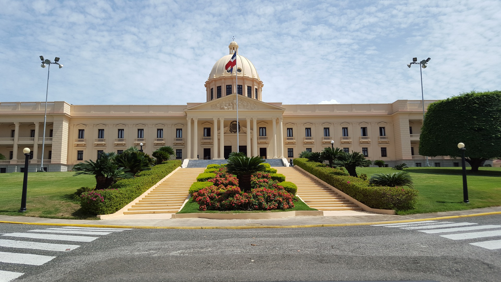

Government
República Dominicana, pronounced is a country located on the island of Hispaniola in the Greater Antilles archipelago of the Caribbean region. It occupies the eastern five-eighths of the island, which it shares with Haiti, making Hispaniola one of only two Caribbean islands, along with Saint Martin, that are shared by two sovereign states. The Dominican Republic is the second-largest nation in the Antilles by area (after Cuba) at 48,671 square kilometers (18,792 sq mi), and third-largest by population, with approximately 10.8 million people (2020 est.), of whom approximately 3.3 million live in the metropolitan area of Santo Domingo, the capital city. The official language of the country is Spanish.